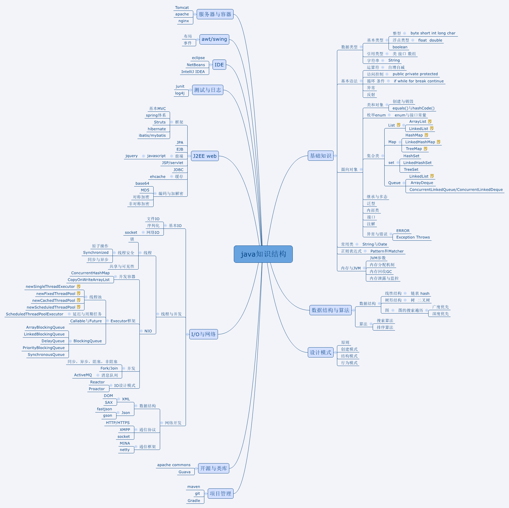

Java基础学习过程[转]
转自：https://blog.csdn.net/scythe666/article/details/51699954
JVM
- 内存模型(内存分为几部分？ 堆溢出、栈溢出原因及实例？线上如何排查？)
- 类加载机制
- 垃圾回收
Java基础
- 什么是接口？什么是抽象类？区别是什么？ 什么是序列化？ 网络通信过程及实践 什么是线程？java线程池运行过程及实践（Executors） java反射机制实践
设计模式
1. 单例模式、原型模式、动态代理模式
Spring
- 什么是IOC 什么是AOP spring事务管理：模板事务跟标注事务的区别及运理原理，什么是事务的传播机制
数据库
1. 锁机制：锁的作用是什么，什么是乐观锁，什么是悲观锁，怎么实现 ？
学习步骤：
java内存模型 学习内容：学习java内存模型 实验方法：写一段代码触发内存溢出，分别触发栈内存和堆内存溢出，写一段代码导致持久代溢出。使用工具查看内存占用情况，学会如何分析内存溢出。
多线程 学习内容：多线程的NIO实现，IO实现（两种实现，阻塞，非阻塞） 试验方法：写一段代码实现多人聊天室，包括双人聊天和多人聊天。
动态代理（工厂模式） （1）学习内容：JDK动态代理实现， 试验方法：一个方法的前置拦截，后置拦截，前置打印获取类名，方法名字，调用参数打印。后置打印返回结果（返回的结果是一个复杂的类）。 （2）学习内容：spring框架 试验方法：对某一包下，所有类的方法做切面，打印日志。
反射机制 学习内容：java的反射机制 试验方法：写一段程序，调用一个Bean下实现了标注（“autocall”）的方法
配置数据源 学习内容：配置数据源 实验方法：自己建一张表，引入数据库连接池，自动插入20万条数据，创建联合索引，验证走索引和不走索引的耗时，查看sql是否走索引，学会查看查询，计划实验，用标注式事务，编程式事务（查看编程式事务源码实现）；用乐观锁和悲观锁实现数据更新。
